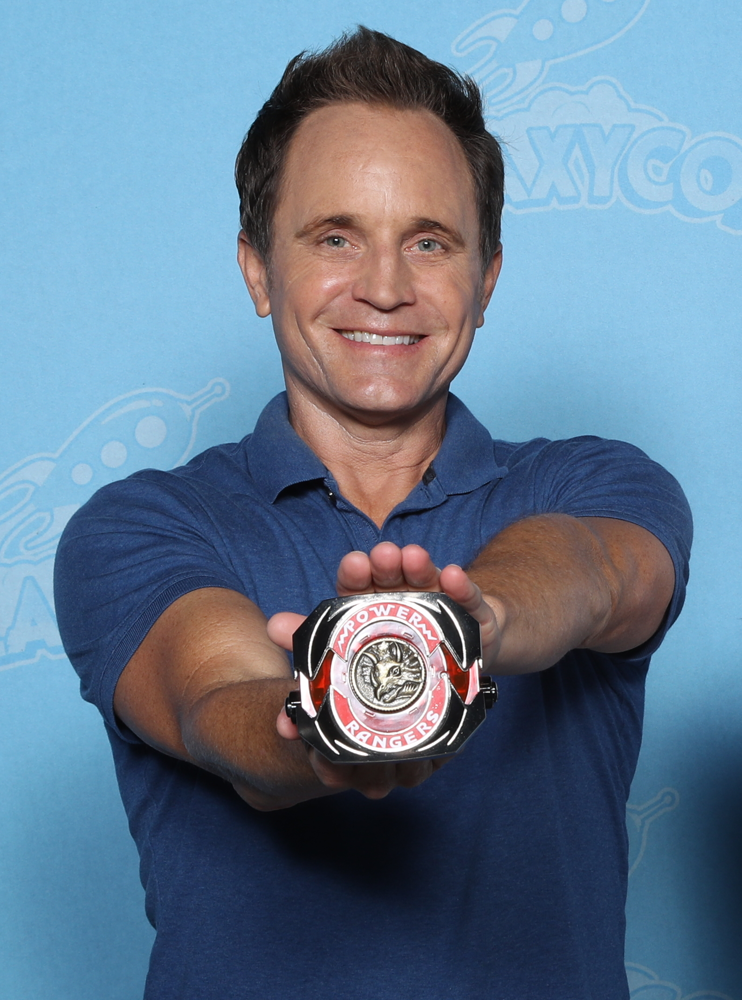

The Introduction of the LGBTQ+ Community
Mistreatment During Production
- Left the production of Mighty Morphin Alien Rangers (1996) due to the severe harassment of the staff because of his sexuality
- Publicily came out as gay in 2010
For a show that boasts inclusivity, bullying one of the main actors off the show doesn't agree with that claim
David Yost (Billy Cranston in the show)
Representation At What Cost?
- First female Ranger to actively detest the skirt that comes with her traditional suit
- Partially it is because of an adaptation error, as her Japanese counterpart is a male
- The first LGBTQ+ character in the mainline series
- Other characters were revealed as part of the LGBTQ+ community before her; however, they were only a part of lesser known media
The question remains: Was she written as LGBTQ+ to include that community, or was it written in order to lower production costs to re-record scenes?
Izzy Garcia